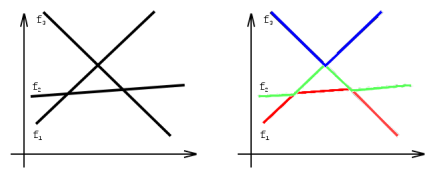

有n个连续函数fi(x)，其中1≤i≤n。对于任何两个函数fi(x)和fj(x),(i!=j)，恰好存在一个x使得fi(x)=fj(x)，
并且存在无穷多的x使得fi(x)<fj(x)。对于任何i;j;k，满足1≤i<j<k≤n，则不存在x使得fi(x)=fj(x)=fk(x)。

如上左图就是3个满足条件的函数，最左边从下往上依次为f1;f2;f3。右图中红色部分是这整个函数图像的最低层
，我们称它为第一层。同理绿色部分称为第二层，蓝色部分称为第三层。注意到，右图中第一层左边一段属于f1，
中间属于f2，最后属于f3。而第二层左边属于f2，接下来一段属于f1，再接下来一段属于f3，最后属于f2。因此，
我们称第一层分为了三段，第二层分为了四段。同理第三层只分为了两段。求满足前面条件的n个函数，第k层最少
能由多少段组成。